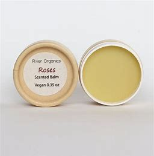
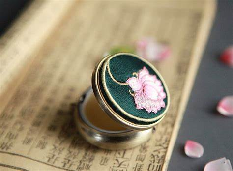
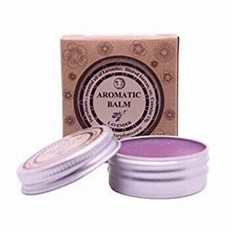
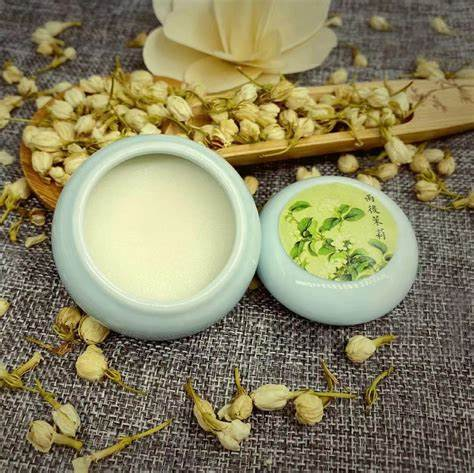

We are excited to introduce our latest innovation at Blossom Florist & Fragrance: the exquisite Fragrance Balm. Designed for fragrance enthusiasts and those seeking a unique sensory experience, our Fragrance Balm offers a new way to enjoy captivating scents that blend seamlessly into your daily routine.
What sets our Fragrance Balm apart is its rich, luxurious texture that nourishes the skin while providing long-lasting fragrance. Formulated with natural ingredients, it hydrates and softens the skin, allowing the enchanting scents to linger throughout the day. Each balm is carefully crafted with a harmonious balance of essential oils and botanicals, delivering a delightful experience that is both refreshing and soothing.
following are some innovations by Blossom Florist & Fragrance;
Fragrance Balm:

Rose Fragrance Balm

Rose fragrance balm is a soothing product used in skincare and aromatherapy, infused with natural oils, extracts, and waxes to capture the calming and uplifting scent of roses. It effectively moisturizes dry skin and can be applied to pulse points for a gentle fragrance or used as a nourishing lip balm. Beyond its pleasant aroma, the balm may help reduce stress, enhance mood, and promote relaxation, often including beneficial ingredients like shea butter and jojoba oil. Overall, it fuses aromatherapy with skincare, making it a popular choice for those seeking comfort and indulgence.
Lotus Fragrance Balm

Lotus fragrance balm is a luxurious, aromatic product infused with the calming scent of lotus flowers, which are celebrated for their soothing properties. Formulated with natural ingredients like essential oils and beeswax, it nourishes the skin while providing a pleasant fragrance. Symbolizing purity and tranquility, the lotus is believed to enhance relaxation and mental clarity, making the balm ideal for meditation and self-care. Its hydrating benefits also help moisturize dry skin. Users appreciate its versatility for both subtle fragrance application on pulse points and for relieving tension through massage. Overall, lotus fragrance balm is a popular choice for those looking to enhance their wellness rituals.
Lavender Fragrance Balm

Lavender fragrance balm is a soothing topical product made from lavender essential oil and natural ingredients such as beeswax, shea butter, and carrier oils. It hydrates the skin and offers aromatic benefits, helping to alleviate anxiety, encourage relaxation, and enhance sleep quality. Frequently incorporated into self-care practices, its delightful floral scent aids in overall well-being and serves as a natural stress reliever.
Jasmine Fragrance Balm

Jasmine fragrance balm is a soothing, natural product that features the enchanting scent of jasmine flowers, known for promoting relaxation. Composed of natural waxes and oils such as beeswax and shea butter, it moisturizes the skin while providing the stress-relieving benefits of jasmine essential oil. The balm is versatile, suitable for application on pulse points for a lasting aroma, and effective for hydrating dry skin. Its portability makes it perfect for personal use or as a thoughtful gift.
Sunflower Fragrance Balm

Sunflower fragrance balm is a moisturizing and healing topical product made from sunflower oil, which is rich in vitamins A, C, D, and E. It is designed for all skin types and features a calming scent from added fragrances and essential oils. Its natural and emollient properties make it ideal for daily hydration and therapeutic self-care, promoting overall skin health and well-being.